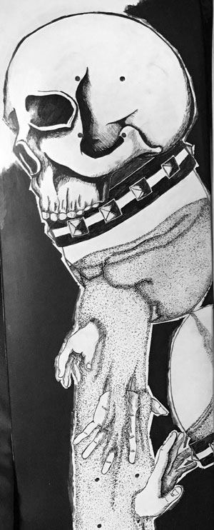
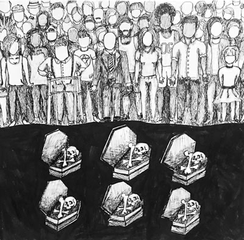
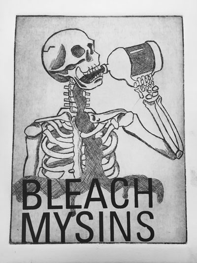
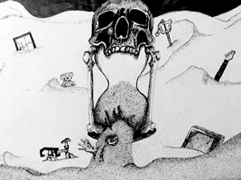
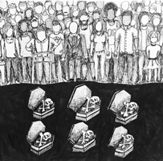
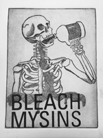

The idea of the time's up hourglass originated from a high school project based upon a personal fear. The fear I chose to make work about was the fear of death, the fear that death is a complete and final end. A drift from the wonders of life into the stillness of oblivion. This fear would keep me up at night. The reality as well as inevitability of the fact of death caused this fear to be intense and relentless. The hour glass was chosen both for it's ability to represent time, as in one's time running out, as well as sand being able to convey the suffocation and consuming thoughts of what I belive death to be. Image is pen and ink on cardstock.

"Time's Up" Skate Deck Design
The skate deck idea builds directly from my original "Time's Up" concept, adding a bit more depth and shifting meaning slightly. The hands represent three ways that people commonly deal with death, both their own as well as others. From top to bottom they are sorrow, acceptance and denial. The image being placed on a skate deck is meant to take a personal and conceptual image and give it a commercial purpose.

"Unity"
When I was young I was picked on profusely, weather verbally or physically, from peers of from my parents, there was always some kind of negative connotation between myself and other human beings. This caused a huge divide between myself and others, and I struggled to find a way to relate myself to even my close friends. However, something that my mother always used to say really stuck with me; none of us are making it out of here alive. No matter how different we are, we all end up in the ground. This fact should be what unifies the human race, and it is how I began to relate to others. All it takes is one common struggle and we could all be unified, and I believe death to be a plausible candidate for that struggle. Work is pen and ink on cardstock.

"Bleach My Sins"
Sin is a dastardly concept. There is such a thing as morality in life, however sin is too harsh, to finial of a term. To label one as a sinner sticks for life, weather the person improves their own morality or not. The guilt and weight of the world and it's judgement can be the heaviest thing we can feel, and some people may do whatever it takes to relieve the pain that weight causes. Image is an etching print with silk screen printed lettering.
Gallery
  
About The Artist
Andrew Cook is a student at Montserrat College of Art in his sophomore year. Growing up in an abusive household and being beaten up in school most of his life, Andrew turned to his artwork as a form of self expression. Due to darker experiences dealing with abuse, self esteem isses, self harm, suicide and mental illnesses, Andrew's work often features darker imagery as a way to cope with the weight that he is constantly carrying and to attempt to help people grasp how he feels on a regular basis. The "Time's Up" collective of work is a culmination of the bigger and more developed pieces in a long list of darker work. This collection is still growing, and will continue to grow until Andrew is as dead as his imagery.
Time's Up
The concept for Time's Up is ultimately this; we all have a limited time on this earth. That being said, that fact should not scare us into submission. We get one life, so we should respect that life by living it how we want to live it, regardless of religion, financial status, social status, loss, or pain. We should have a moral compass and try not to let our actions inflict pain on others, but we should also put ourselves before all else. Caring for a loved one is different than letting them drain the life out of you. Buying someone lunch is different than letting someone empty your bank account. Giving is different than being taken from. Life comes with pain, but if we let that pain get the best of us; the end. It's over. Times' Up.